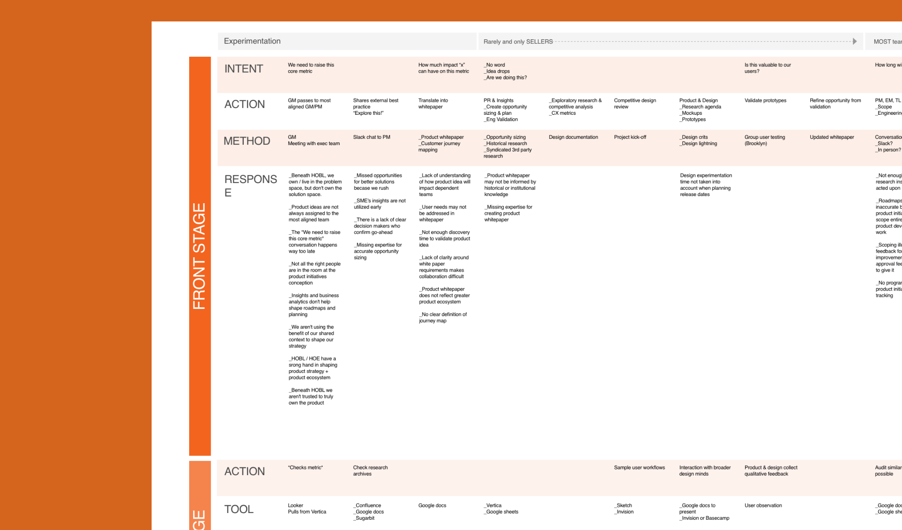
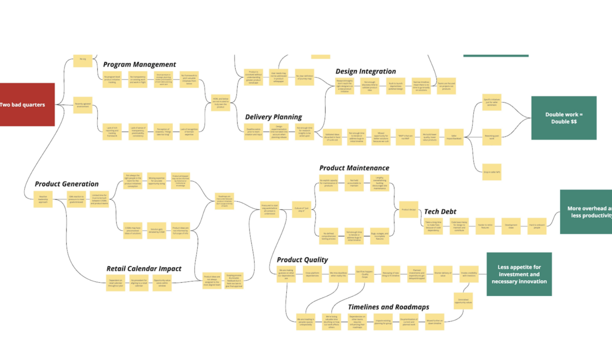
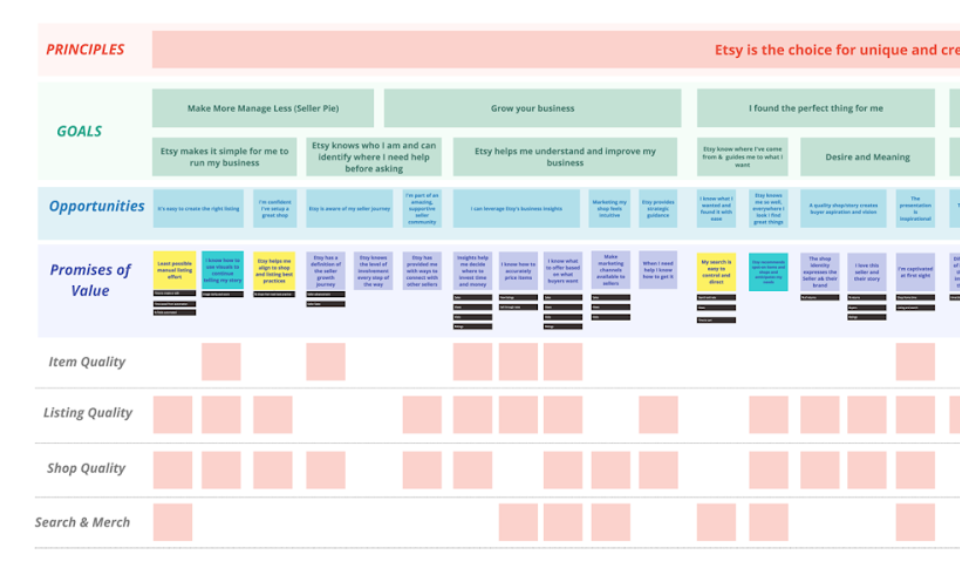
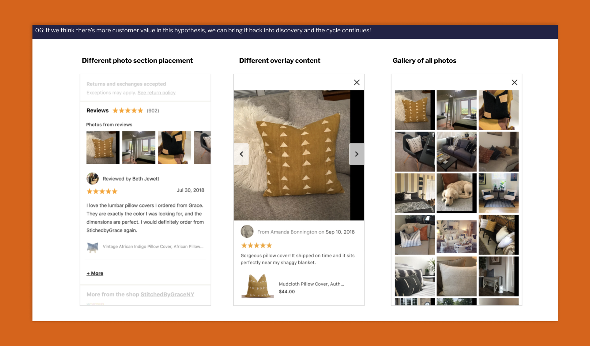
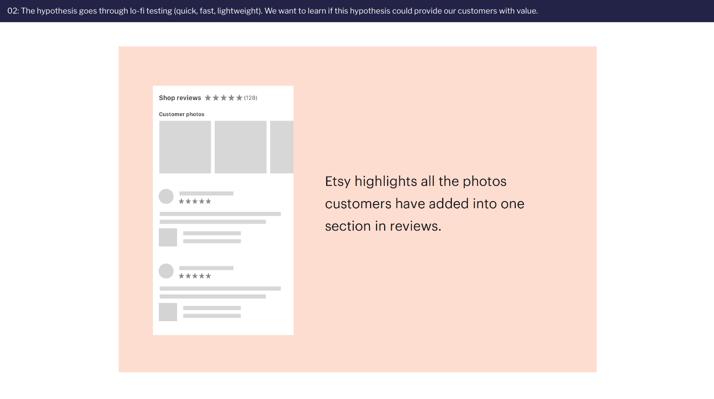
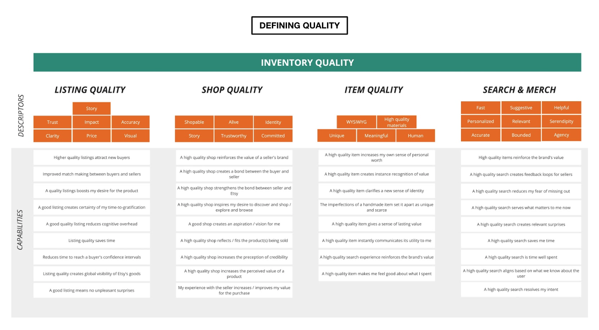

Discovery
As with any engagement, we began with a Discovery phase. What we uncovered was that the core challenges weren’t rooted in a lack of agile practices, but something deeper...
User interviews for a service blueprint
To validate Etsy’s request for agile coaches, we launched a six-week discovery to better understand their organizational dynamics and team workflows. Our team conducted interviews across all levels—from individual contributors to the C-suite. I facilitated a service blueprinting session that mapped the employee journey from the IC perspective, while capturing the supporting layers of leadership and operational functions to reveal systemic friction points.

Problem identification
Synthesizing this data revealed key problems:
- Product discovery was often minimal, with teams jumping straight to predefined solutions or feature ideas.
- Product delivery practices varied so significantly across teams that establishing a shared, consistent process was nearly impossible.
This lack of clarity and alignment in product practices led to fragmented experiences—both internally across the organization and externally for Etsy’s customers.

Solution
Our recommendations to the organization took one year to be rolled out across the entire global organization.

Lean Value Tree
We collaborated with Etsy’s leadership—VPs of Engineering, Product, and Design—to co-create a Lean Value Tree that laid the foundation for a more user-centered product development strategy. Our approach followed four phases: discovery, process prototyping, validation, and scaling.

Hypothesis backlog
Following discovery, we developed a backlog of hypotheses and partnered with teams to test lightweight process changes. These experiments included improved user story writing, clearer acceptance criteria, kickoff rituals, journey mapping, desk checks, and low-fidelity user testing. We evaluated success based on team collaboration and how many validated experiments progressed to engineering.

Stoplight framework
I also introduced a “stoplight” review framework—where designers and PMs assessed experiments and determined whether to move them forward, keep exploring, or sunset them. By the end of this phase, our coaches had enabled 30+ new product practices across Etsy’s pilot teams, paving the way for scaled adoption.

Outcome-based roadmaps
As expected, shifting from prescriptive roadmaps to outcome-driven thinking came with some resistance. Embracing ambiguity wasn’t easy. But as teams began working with greater autonomy and saw the impact of faster, more user-centered experimentation, adoption grew. The focus shifted—from shipping features to delivering real customer value.
Impact
Our work made a lasting impact at Etsy—one that still shapes how teams operate today. The initiative led to the creation of the “Etsy Way,” a set of shared principles and playbooks that clarified how product practices should function across the organization. Teams moved away from rigid, prescriptive roadmaps toward a focus on real customer outcomes.
User research also underwent a major shift. Rather than running usability tests late in the process, teams began validating high-level concepts with users weekly. Research became embedded—no longer siloed, but integrated into every phase of product development, keeping teams close to real problems and aligned with meaningful solutions.
Years later, I caught up with a former client over a beer and asked if any of our work had stuck. He smiled and said, “It’s like you all never left.” I think that’s the best kind of legacy.